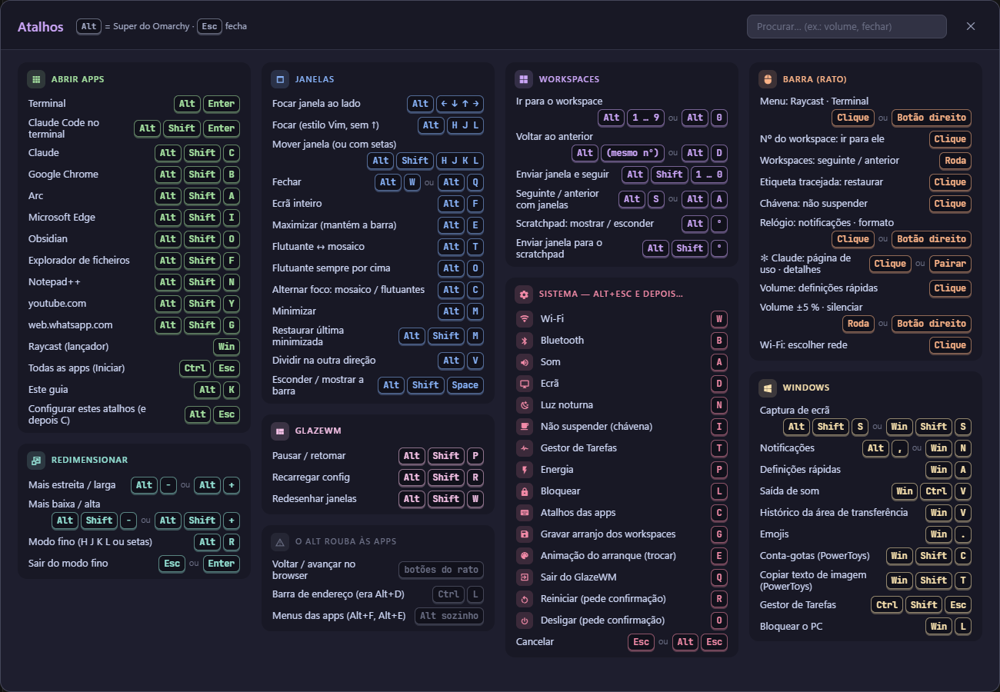
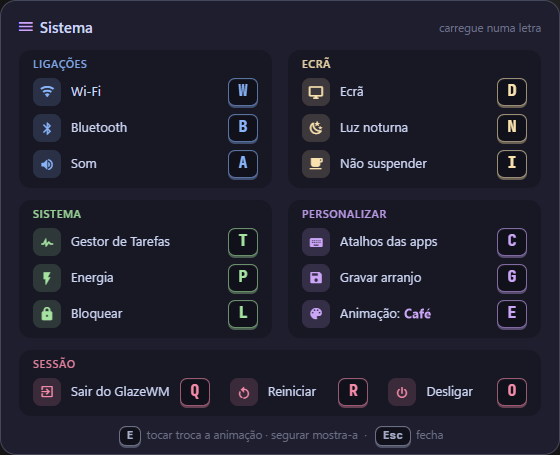
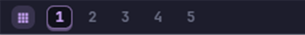
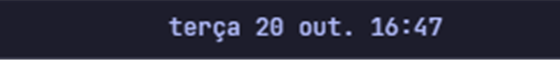
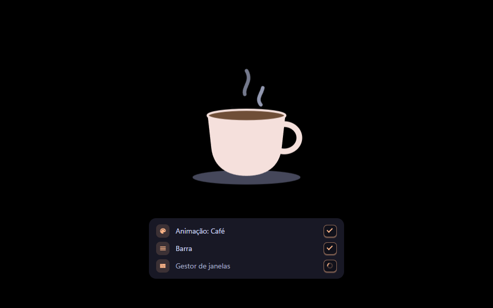

Morg Keys
Um Windows 11 conduzido pelo teclado, ao estilo do Omarchy: janelas arrumadas sozinhas em mosaico, uma barra no topo em Catppuccin, um guia de atalhos em Alt+K e um ecrã de arranque que tapa tudo até estar pronto. Projeto não oficial, inspirado no Omarchy. A instalação descarrega os programas dos sites oficiais (ou usa os que puser em 1-instaladores\); depois disso, nada precisa de internet.
O que é
GlazeWM: as janelas
Cada janela nova ocupa o seu espaço e as outras encolhem para dar lugar. Há 10 áreas de trabalho (workspaces), Alt+1 a Alt+0. A tecla Alt faz o papel da tecla Super do Omarchy.
Zebar: a barra do topo
Workspaces, janelas minimizadas, relógio, uso do Claude, CPU, memória, som e Wi-Fi. A barra de tarefas do Windows fica escondida (aparece ao encostar o rato em baixo).
Guia e painel
Alt+K abre o guia com todos os atalhos. Alt+Esc abre o painel do sistema: uma letra faz a ação (Wi-Fi, som, bloquear, desligar…).
Ecrã de arranque
Ao ligar o PC aparece o ecrã preto com uma animação (uma chávena de café com vapor) e a lista do que está a arrancar. Só desaparece quando tudo está pronto e cada app está no seu workspace.
O que está na pasta
├─ INSTALAR.cmd ← duplo clique para instalar
├─ DESINSTALAR.cmd ← desfaz tudo (sem apagar nada de vez)
├─ Tutorial.html ← este documento
├─ README.md · LEIA-ME.txt · LICENSE · LICENCAS.txt · COMO-FOI-FEITO.md · CLAUDE.md ← para o TI / agentes de IA
├─ imagens\ fotografias dos ecrãs, usadas neste tutorial
├─ 1-instaladores\ fonte JetBrainsMono NF; os instaladores (GlazeWM 3.10.1 + Zebar 3.3.1, Python 3.11.9, Visual C++) são descarregados para aqui na instalação
├─ 2-configuracao\ modelos da configuração (a pasta do utilizador é preenchida na instalação)
└─ scripts\ instalar.ps1, instalar-programas.ps1, desinstalar.ps1, gerar-modelos.ps1, gerar-cafe-bmp.ps1, arranque-modelo.txt
Antes de começar
- Windows 11. O instalador para se for Windows 10.
- Inicie sessão com a conta de quem vai usar o PC. Tudo é instalado para essa conta.
- Tenha à mão uma conta de administrador. O Windows pede-a uma vez (janela UAC) para instalar os programas. Se já estiverem instalados, não pede.
- A pasta do utilizador não pode ter espaços (ex.:
C:\Users\joaoserve,C:\Users\Joao Silvanão). O instalador verifica. - Copie esta pasta para o PC (ex.: Transferências). Não instale a partir de uma pasta de rede.
- Internet durante a instalação, para descarregar os programas que faltem (cerca de 80 MB). Sem internet: ponha antes os instaladores em
1-instaladores\com os nomes indicados noCOMO-FOI-FEITO.md(§7). - Espaço: cerca de 300 MB.
Instalar
- Feche os programas abertos (o Explorador vai reiniciar uma vez).
- Dê duplo clique em
INSTALAR.cmd. Não use “Executar como administrador”. - Responda à pergunta (Enter = nenhum; muda-se depois, ver Ecrã de arranque e programas ao iniciar):
- Programas .bat ao iniciar: cole o caminho de cada
.batque deve correr escondido quando o PC liga (por exemplo, um servidor local). Enter sem nada = nenhum.
- Programas .bat ao iniciar: cole o caminho de cada
- Se aparecer o pedido de administrador, introduza as credenciais de administrador. A instalação dos programas demora 1 a 3 minutos.
- No fim aparece o ecrã de arranque e depois a barra no topo. Carregue numa tecla para fechar a janela do instalador.
apps.txt). Cada app que não existir neste PC fica comentada com a nota # (não encontrada neste PC) e aparece como aviso no fim. Depois de instalar a app, tire o # e carregue Alt+Shift+R (ver Mudar os atalhos das apps).
Opções (para o TI)
O INSTALAR.cmd passa as opções ao scripts\instalar.ps1, por exemplo numa linha de comandos aberta na pasta:
INSTALAR.cmd -Animacao cafe -Bat "C:\Projetos\site\iniciar.bat|http://localhost:3000|Servidor do site"| Opção | Efeito |
|---|---|
-Animacao cafe | Animação do arranque (por agora só há esta). |
-Bat "caminho|endereço|nome" | Um .bat ao iniciar, sem perguntar. Endereço e nome são opcionais. Vários: separe com ;. |
-SemPerguntas | Não pergunta nada: sem .bat (salvo -Bat). |
-ManterIcones | Não esconde os ícones do ambiente de trabalho. |
-ManterBarraWindows | Não põe a barra de tarefas do Windows a esconder-se sozinha. |
-NaoIniciar | Instala sem arrancar já; arranca no próximo início de sessão. |
Para correr de novo (por exemplo, depois de instalar o Claude Code), basta repetir. A configuração anterior fica guardada em %USERPROFILE%\.glzr.copia-<data>. A lista de apps, o arranque.txt e a disposição guardada mantêm-se, e não volta a fazer a pergunta.
Primeiros passos
- Alt+K: abre o guia com todos os atalhos. Fecha com Esc, Alt+K ou um clique fora.
- Alt+Enter: abre um terminal. Abra outro e veja as janelas a dividirem o ecrã.
- Alt+←/→ muda o foco; Alt+Shift+←/→ troca as janelas de lugar.
- Alt+Shift+2 manda a janela para o workspace 2; Alt+1 volta.
- Alt+W fecha a janela. Alt+Esc mostra o painel do sistema.
Atalhos
Todos estão no guia Alt+K: é só começar a escrever para procurar (ex.: “volume”). Os da secção “Abrir apps” vêm do seu apps.txt, por isso aparecem sempre os atuais.

Os principais:
Janelas
| Alt+W / Q | Fechar |
| Alt+F | Ecrã inteiro |
| Alt+E | Maximizar (sem tapar a barra) |
| Alt+T | Flutuante ↔ mosaico |
| Alt+O | Flutuante e sempre por cima |
| Alt+C | Alternar foco: mosaico / flutuantes |
| Alt+M | Minimizar |
| Alt+Shift+M | Repor a última minimizada |
| Alt+V | Próxima janela ao lado ↔ por baixo |
| Alt+- / + | Largura −/+ 5% (com Shift: altura) |
| Alt+R | Modo redimensionar (setas, Esc sai) |
Foco e mover
| Alt+setas | Mudar o foco (ou H J L) |
| Alt+Shift+setas | Mover a janela (ou H J K L) |
Workspaces
| Alt+1…0 | Ir para o workspace 1…10 |
| Alt+Shift+1…0 | Levar a janela para lá |
| Alt+S / A | Próximo / anterior |
| Alt+D | O último onde esteve |
| Alt+º | Scratchpad (mostra/esconde) |
| Alt+Shift+º | Mandar janela para o scratchpad |
Sistema
| Alt+K | Guia de atalhos |
| Alt+Esc | Painel do sistema |
| Alt+Shift+S | Captura de ecrã |
| Alt+, | Notificações |
| Alt+Shift+Espaço | Esconder/mostrar a barra |
| Alt+Shift+P | Pausar o GlazeWM (repetir para retomar) |
| Alt+Shift+R | Aplicar apps.txt e recarregar |
| Alt+Shift+W | Redesenhar as janelas |
Apps (de apps.txt)
| Alt+Enter | Terminal |
| Alt+Shift+Enter | Claude Code |
| Alt+Shift+letra | As restantes. Veja-as em Alt+K. |
@ # € [ ]). Um atalho com Ctrl+Alt roubaria essas teclas, por isso o sistema usa sempre Alt ou Alt+Shift.
Painel do sistema (Alt+Esc)
Alt+Esc mostra um painel com as ações do sistema, arrumadas em grupos com cores. Cada ação tem um ícone e, à direita, a letra a carregar, numa caixa escura. Carregue na letra e a ação acontece. Para sair sem fazer nada: Esc, Enter ou Alt+Esc outra vez.

| Grupo | Letras |
|---|---|
| Ligações | W Wi-Fi · B Bluetooth · A Som |
| Ecrã | D Ecrã · N Luz noturna · I Não suspender (o café na barra) |
| Sistema | T Gestor de Tarefas · P Energia e suspensão · L Bloquear o PC |
| Personalizar | C Apps e arranque (o painel das apps) · G Gravar a disposição das janelas · E Animação do arranque (tocar troca, segurar mostra; ver Ecrã de arranque) |
| Sessão | Q Sair do GlazeWM · R Reiniciar · O Desligar (estes dois pedem confirmação) |
A barra
Na barra do topo, cada informação tem o seu ícone numa caixinha com cor (CPU azul, memória verde-água, som pêssego, rede verde). Os workspaces são “teclas” escuras: o que está aberto tem contorno lilás; os vazios aparecem esbatidos.


| Zona | Clique | Outros gestos |
|---|---|---|
| Ícone do menu (esquerda) | Abre o Raycast, se estiver instalado | Botão direito: terminal |
| Workspaces | Muda de workspace | Roda do rato: seguinte/anterior |
| Janelas minimizadas (etiquetas tracejadas com o ícone da app) | Repõe e dá foco | |
| Café (centro) | Visível quando o PC não vai suspender | Liga/desliga com Alt+Esc, I |
| Relógio | Botão direito: data longa e semana | |
Claude 5h · sem · ↺ | Abre a página de uso | Ver Uso do Claude |
| Som | Painel rápido do Windows (= Win+A) | Roda: volume · Botão direito: silenciar |
| Wi-Fi | Lista de redes |
Mudar os atalhos e as apps do arranque (painel)
Alt+Esc e depois C abre o painel Apps e arranque. Não é preciso abrir ficheiros nem escrever comandos: escolhe-se uma app e depois para onde a enviar, com o rato ou só com o teclado, e cada mudança vale logo.
- À esquerda, a lista das apps: as especiais (Terminal, Claude Code, Explorador), os sites e todas as apps do menu Iniciar. Escreva para procurar. Para um site, escreva o endereço em + site e carregue em Adicionar: ele aparece na lista, em “Sites”.
- Escolher: clique numa app (ou use ↑ ↓ e Enter). No topo aparece “Enviar … para” e os destinos possíveis acendem. Esc ou Cancelar desistem.
- Atalhos: depois de escolher, clique numa tecla do teclado desenhado (ou carregue nessa letra). Essa tecla com Alt+Shift passa a abrir a app (também há Alt+Enter e Alt+Shift+Enter). As teclas cinzentas com cadeado são do sistema e não aceitam apps.
- Arranque: depois de escolher, clique na caixa de um workspace (ou carregue no número; 0 = workspace 10). Ao ligar o PC, ela abre nesse workspace.
- Mudar ou tirar: clique numa tecla ou numa app de um workspace e envie-a para outro sítio; Del tira. O ✕ que aparece ao passar o rato também tira.
- Desfazer (botão no topo ou Ctrl+Z) volta atrás, passo a passo. Esc ou um clique fora fecham o painel.
Se uma mudança não puder ser feita (por exemplo, a app já não existe), o painel diz porquê no rodapé e nada é alterado.
Para quem prefere o ficheiro de texto
O painel grava no mesmo ficheiro de sempre, Documentos\Guia de Atalhos\apps.txt, que continua a poder ser editado à mão:
- Uma linha por atalho:
TECLAS = APP. Exemplos:
A APP é o nome como aparece no menu Iniciar,Alt+Shift+B = Google Chrome Alt+Shift+O = Obsidian Alt+Shift+Y = web: https://www.youtube.com Alt+Shift+X = C:\Programas\app.exeweb:+ endereço (abre numa janela própria do Chrome), o caminho de um.exe, ou uma destas palavras:terminal,claude-code,explorador. - Grave e carregue Alt+Shift+R. Se houver um erro (tecla repetida, app que não existe), aparece uma janela a dizer qual é a linha, e nada é alterado.
O guia Alt+K lê este mesmo ficheiro, por isso mostra sempre os atalhos atuais.
Ecrã de arranque e programas ao iniciar
Tudo isto está num só ficheiro de texto: Documentos\Guia de Atalhos\arranque.txt. As mudanças valem no próximo arranque.
animacao = cafe
bat = C:\Projetos\site\iniciar.bat | http://localhost:3000 | Servidor do site
bat = C:\Scripts\copias.batAnimação

Para trocar: Alt+Esc e depois:
- tocar E: passa à animação seguinte. O painel fica aberto e mostra qual está escolhida (“Animação: Café”), por isso pode ir tocando até chegar à que quer;
- segurar E: ao largar a tecla, o painel fecha e a animação escolhida aparece uns segundos, com etapas de exemplo, para ver como fica.
Fica gravado no arranque.txt. Também pode escrever o nome no ficheiro (animacao = cafe). Por agora há uma só animação, por isso tocar E não muda nada; segurar mostra-a. O COMO-FOI-FEITO.md explica como acrescentar outras.
Programas .bat ao iniciar
Cada linha bat = … é um programa que corre escondido quando o PC liga (sem janela preta), com um ícone na área de notificação (junto ao relógio, nos ícones ocultos). Formato:
bat = CAMINHO_DO_BAT | ENDEREÇO | NOME- ENDEREÇO (opcional): se o programa é um servidor local, por exemplo
http://localhost:3000. O ícone ganha “Abrir no navegador” e o ecrã de arranque só sai quando esse endereço responde. - NOME (opcional): o que aparece no ecrã de arranque e no ícone. Sem nome, usa o nome do ficheiro.
Clique no ícone para:
- abrir no navegador;
- ver o registo ao vivo (a saída do programa, guardada em
%USERPROFILE%\.glzr\arranque\<nome>.log); - reiniciar, parar ou iniciar;
- fechar.
O .bat corre na sua própria pasta. Se ele usar Node.js (npm run dev, por exemplo), o Node.js e as dependências do projeto têm de estar instalados: não fazem parte deste pacote.
Que apps abrem e onde
Duas formas, que gravam no mesmo sítio (%USERPROFILE%\.glzr\layout.json):
- Painel (Alt+Esc, C): escolha cada app e envie-a para a caixa do seu workspace. Uma app do menu Iniciar que o sistema ainda não conhece é reconhecida no primeiro arranque: abre-a, fica com a janela nova que aparecer e lembra-se dela para as vezes seguintes.
- Gravar o que está aberto: arrume as janelas como quer e carregue Alt+Esc, G. Isto substitui o que estava no painel pelo arranjo atual (as apps que o painel já sabia abrir continuam a saber).
O que acontece ao ligar o PC
Por baixo da animação aparece a lista do que está a arrancar. Cada linha tem o seu ícone e, à direita, o estado: a rodar enquanto carrega, ✓ quando está pronto, ! se falhou (por exemplo, um .bat que já não existe).
- Aparece o ecrã preto com a animação escolhida.
- Arrancam a barra e o GlazeWM.
- Arrancam os programas
.bat. - Abrem as apps guardadas, cada uma no seu workspace.
- Quando nada mexe durante 3 segundos (e os endereços dos
.batrespondem), o ecrã sai. Nunca fica mais de 60 s.
Uso do Claude na barra
A barra mostra 5h X% · sem Y% · ↺ tempo: o uso da janela de 5 horas, o uso semanal e quanto falta para a janela de 5 h recomeçar. Os números vêm do próprio Claude Code. O instalador configura a statusLine em %USERPROFILE%\.claude\settings.json se o Claude Code já estiver instalado.
- Os números aparecem depois da primeira resposta do Claude Code. Ficam esbatidos se tiverem mais de 15 minutos.
- Se o Claude Code já tinha outra
statusLine, o instalador não mexe. Peça ao TI para juntar as duas. - Instalou o Claude Code depois? Volte a correr o
INSTALAR.cmd.
Resolver problemas
| Sintoma | O que fazer |
|---|---|
| Reiniciei e não arrancou nada | Abra o Agendador de Tarefas e procure “GlazeWM (arranque)”: deve estar Pronta, com “Ao iniciar sessão”. Para arrancar à mão, abra o PowerShell e escreva Start-ScheduledTask "GlazeWM (arranque)". |
| Uma janela “desapareceu” | Pode estar noutro workspace (veja a barra) ou minimizada (chips na barra, Alt+Shift+M). Se sair do GlazeWM (Alt+Esc, Q), todas as janelas escondidas voltam a aparecer. |
| Os ícones da barra são quadrados | A fonte ainda não foi carregada. Termine a sessão e volte a entrar. |
| Um atalho de app não faz nada | Abra o painel (Alt+Esc, C) e veja se a app está na tecla certa; envie-a de novo. Uma app instalada agora pode precisar de terminar a sessão para aparecer no menu Iniciar. |
| Preciso do Windows “normal” por momentos | Alt+Shift+P pausa o GlazeWM; repita para retomar. |
| Uma janela de administrador não obedece | Normal no Windows: janelas elevadas não aceitam ordens de programas sem elevação. Use o rato nessa janela. |
| O instalador fecha logo com erro de política | A política de grupo da organização bloqueia scripts. O TI tem de correr scripts\instalar.ps1 com a política adequada. |
Registos úteis em %USERPROFILE%\.glzr\: instalacao.log, glazewm\errors.log, zebar\errors.log, zebar\omarchy-catppuccin\.layout-restore.log e arranque\<nome>.log (programas .bat).
Desinstalar
Duplo clique em DESINSTALAR.cmd. Isto:
- remove a tarefa de arranque;
- fecha o GlazeWM e a barra, e repõe as janelas escondidas;
- volta a pôr os ícones e a barra de tarefas como estavam;
- tira a
statusLinedo Claude Code; - move
%USERPROFILE%\.glzrpara.glzr.removido-<data>. Não apaga nada de vez: pode apagar essa pasta depois.
Os programas continuam instalados. Para os remover: Definições › Aplicações › Aplicações instaladas › GlazeWM, Python 3.11 e Microsoft Visual C++ (este último pode ser usado por outros programas, por isso é melhor deixá-lo).
Notas técnicas (TI)
O documento completo para o TI, ou para um agente de IA manter ou refazer tudo, é o COMO-FOI-FEITO.md nesta pasta: arquitetura, cada ficheiro, o arranque passo a passo, a instalação à mão, a origem de cada componente, as armadilhas e as receitas de alteração. Resumo:
- Onde fica tudo:
%USERPROFILE%\.glzr\. Lá estãoglazewm\config.yaml,zebar\settings.jsone o único pack do Zebar,omarchy-catppuccin(barra na raiz, guia e painel emguia\, ecrã de arranque emarranque\, uma só cópia do cliente do Zebar emvendor\). Obar_helper.pyé o ajudante de tudo (arranque, café, guia, disposição, apps), e obat_tray.pycorre cada.batcom o seu ícone. As escolhas do utilizador estão emzebar\omarchy-catppuccin\guia\apps.txtearranque.txt. - Arranque por tarefa agendada, não pela chave Run: o
glazewm.exetemuiAccess=truee só pode ser lançado por ShellExecute. A chave Run e o lançamento direto pelo Agendador falham (0x800702E4). Por isso a tarefa correpyw.exe -I bar_helper.py boot, que lança o GlazeWM por ShellExecute. - Modelos:
2-configuracao\glzré a configuração deste PC com{{HOME}}(pasta do utilizador com/),{{HOME_RE}}(o mesmo como regex, nas permissões dozpack.json), e{{ANIMACAO}}noarranque.txt. O bloco das apps noconfig.yamlvem vazio. O instalador gera-o combar_helper.py apps-apply --skip-missing. - Permissões do Zebar: cada widget só pode correr
C:\Windows\py.exe/pyw.execom os argumentos exatos deprivileges.shellCommands. Ao mudar de pasta, ozpack.jsontem de acompanhar (o instalador faz isso). - Zebar só lê pacotes novos ao arrancar. Depois de mudar um
zpack.json, feche o Zebar e volte a abri-lo (ou saia do GlazeWM e reinicie a tarefa). - Python: os ajudantes usam só a biblioteca padrão e correm sempre por
C:\Windows\py.exe/pyw.execom-I(modo isolado). O instalador põe o Python 3.11 para todos os utilizadores, se não houver Python 3.10 ou mais recente. - Internet: só a instalação vai à rede, para descarregar os instaladores dos sites oficiais (verificados por SHA-256 ou pela assinatura da Microsoft). Em uso nada vai à rede: o cliente do Zebar está incluído em
vendor\zebar-3.3.1.mjse a fonte está no pacote. A única exceção é o uso do Claude, que só lê um ficheiro local escrito pelo Claude Code. - Atualizar o pacote a partir de um PC já configurado: o
2-configuracaofoi gerado copiando a configuração ativa e trocando a pasta do utilizador pelos marcadores. Repita esse processo depois de mudar a configuração (scripts\gerar-modelos.ps1).